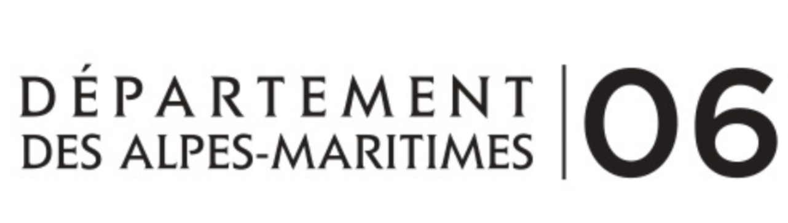
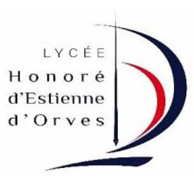

Étudiant BTS SIO SISR
Passionné par les infrastructures réseau et la cybersécurité, je me spécialise dans la gestion et la sécurisation des systèmes informatiques. Actuellement en formation BTS SIO option SISR, je développe mes compétences techniques pour devenir un expert en solutions d'infrastructure.
Découvrir mes projetsÉtudiant en BTS SIO option SISR (Solutions d'Infrastructure, Systèmes et Réseaux), je me spécialise dans la gestion des infrastructures réseau et système en entreprise.
Ma formation m'a permis d'acquérir des compétences solides en administration système et réseau. Curieux et motivé, je me tiens informé des évolutions dans le domaine.
2024
Lycée Albert Calmette - Nice
Obtention du baccalauréat spécialités : HGGSP et NSI.
2024 - 2026
Lycée Estienne D'Orves - Nice
Formation aux solutions d'infrastructure, systèmes et réseaux. Acquisition de compétences en administration système, virtualisation, sécurité informatique et gestion de réseaux.
En cours
Auto-formation
• MOOC EBIOS RM
• Cisco CCNA (visée)
• PIX - Certification des compétences numériques

J'effectue mon alternance au sein du Département des Alpes-Maritimes, à la Direction des Systèmes Numériques, au service réseau.
Au sein de la DSN, j'interviens sur diverses missions liées à l'infrastructure réseau : déploiement et maintenance des équipements, gestion du Wi-Fi, câblage et création de locaux techniques.
Étude de couverture Wi-Fi avec Ekahau et déploiement de bornes dans l'ensemble des bâtiments pour pallier les manques de couverture. Réservation d'adresses IP via DHCP et administration centralisée du contrôleur Wi-Fi pour garantir une gestion optimale du réseau sans fil.
Gestion complète d'un projet de création de local technique : réalisation du cahier des charges, élaboration des devis, commande du matériel réseau et installation des équipements actifs. Mise en œuvre de l'infrastructure réseau de bout en bout.
Remplacement complet du câblage réseau vétuste d'un bâtiment : retrait des anciens câbles des goulottes, installation de nouveaux câbles Cat 6A, reconfiguration des switchs et documentation de la nouvelle infrastructure.

Je suis étudiant au Lycée Estienne d'Orves à Nice, en formation BTS SIO option SISR (Solutions d'Infrastructure, Systèmes et Réseaux).
Cette formation me permet d'acquérir des compétences en administration système et réseau à travers des projets pratiques comme GNEX, combinant théorie et mise en situation professionnelle.
J'ai réalisé, afin de faciliter les tests qu'il faut réaliser lors de l'installation d'un switch, un script me permettant d'effectuer la totalité des pings automatiquement.
J'ai réalisé un script qui permet de brut force un mot de passe que l'on saisie au préalable. Toutes les informations sont inscrites afin de suivre ce qu'il se passe.
📅 Septembre 2024
Étude du Benchmark Green IT 2024 sur la sobriété numérique au sein des organisations, utilisant des standards comme ACV et PEF pour mesurer l'impact environnemental.
📅 Novembre 2024
Baromètre de l'éco-conception digitale 2024. Analyse comparative des IA textuelles (type ChatGPT) et créatives (type Dall-e) sur leurs scores Eco Index, et retour sur la régression des sites du CAC40 et e-commerce.
📅 Février 2025
Troisième édition de l'étude EENM (Empreinte environnementale du numérique mondial) : le numérique représente 3,65 % des émissions mondiales de CO₂ et 40 % du budget personnel soutenable. Recommandations pour un usage plus responsable, notamment via l'éco-conception.
📅 Juin 2025
Nouvelle édition enrichie (5ᵉ) du référentiel d'écoconception web, inclut mapping RGESN, traduction en anglais/español, nouveau site dédié, livre aux éditions Eyrolles.
📅 Mai 2024
Refonte du référentiel RGESN publié en 2022, piloté par l'État français (Ademe, INR…), pour encadrer l'écoconception numérique dans les services publics.
📅 Janvier 2025
Introduction de nouveaux critères dans la certification TCO (durabilité numérique) : climat, circularité, substances dangereuses et réparabilité.
📅 Juin 2025
La Commission européenne enrichit l'étiquette énergétique des mobiles en y ajoutant des indices liés à la durabilité (réparabilité, batterie, résistance) en plus de la consommation.
📅 Janvier 2025
Les entreprises sont de plus en plus sensibilisées au Green IT, mais elles peinent à appliquer des mesures concrètes. Les réglementations comme la CSRD ou la loi REEN devraient jouer un rôle d'accélérateur.
📅 Septembre 2025
Conférences sur l'IoT, IA frugale et éco-conception à la convergence technologie et écologie, lors de l'événement SIDO à Lyon.
📅 Octobre 2025
Les data centers consomment 2 % de l'électricité mondiale en 2024 et pourraient multiplier par 10 leur consommation d'ici 2026. L'IA accentue cette pression, avec un fort impact en eau et en énergie. Les géants du cloud explorent des solutions alternatives.
📅 Septembre 2025
Conférences sur l'IoT, IA frugale et éco-conception à la convergence technologie et écologie, lors de l'événement SIDO à Lyon.
Vous avez un projet, une opportunité de stage ou encore une question à me poser ? N'hésitez pas à me contacter, je serais ravi d'échanger avec vous !